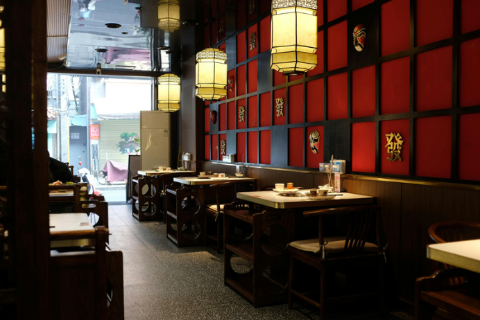

Our Story
Umami House was founded with one simple goal: to bring the authentic taste of Japan to every guest. Inspired by the vibrant streets of Tokyo and the traditions passed down through generations, every dish is prepared with passion, precision, and the finest ingredients.
Whether you're enjoying sushi with friends or a warm bowl of ramen after a long day, we strive to create an unforgettable dining experience that feels just like home.
